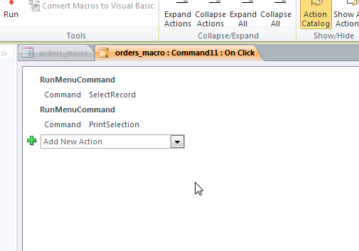
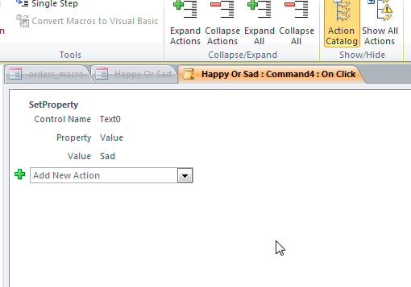

Created by Paul Scarrone / @PaulSCoder
Set of ordered instructions for the purpose of automating frequently used tasks
Basically yes with a focus on the basically

We are going to construct a form and give it some functionality
Its always a good idea to get an idea of what our controls are named and setup their default values.
Set the default text property of our text box to something fun.
Our Goal is to make this form change the value in the text field to happy/sad depending on the button clicked
Right click a button and select 'Build Event'
Notice the action catalog to the right as well
Go ahead and try and make the happy button do its job
While this could be considered trivial being able to interact with properties is very important to generating rich applications
Remember programming is all small trivial pieces
Checkout RPS